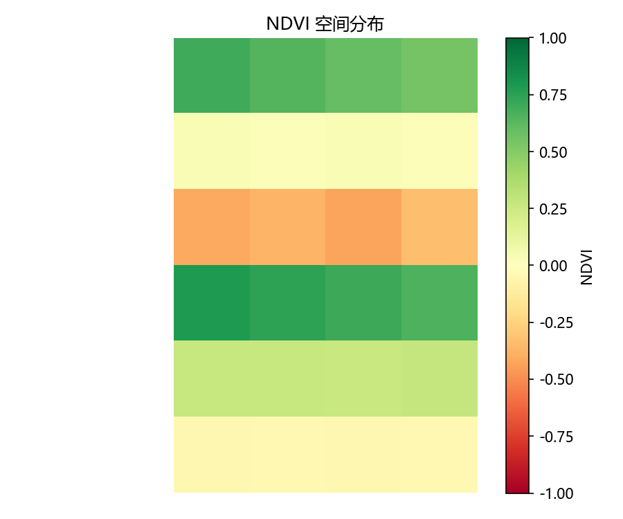
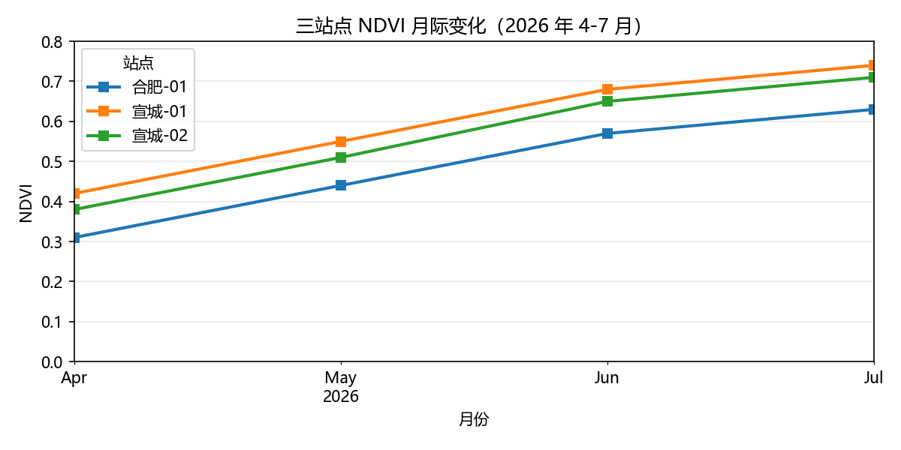
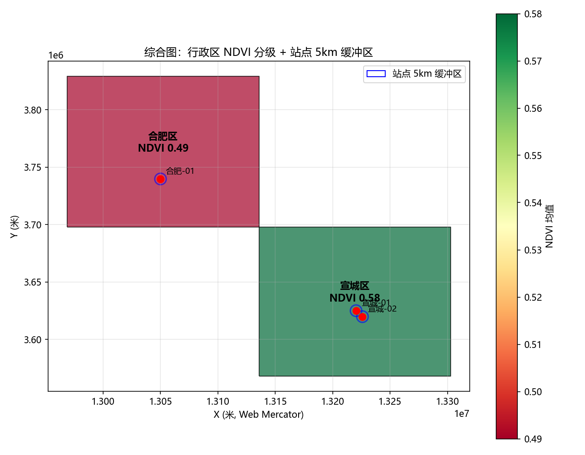
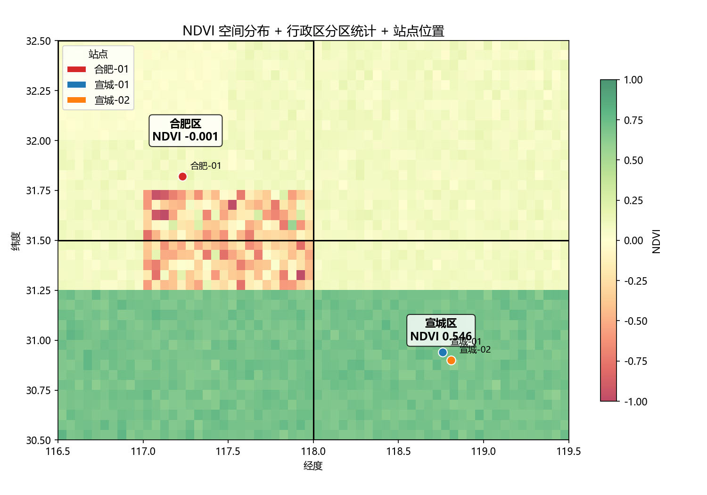

项目
5 周从零到能独立跑通 NDVI 分区统计完整流程。以下是每周核心成果。

Week 1 — Python + NumPy + matplotlib
从零学 Python，用 NumPy 算 NDVI（近红外-红）/（近红外+红）， matplotlib 渲染热力图。红是水体（负值），绿是植被（正值）。

Week 2 — pandas 表格处理
12 行站点观测表，学 DataFrame/筛选/分组聚合/时间序列。 三站点 NDVI 4-7 月全上升，合肥最低、宣城最高。

Week 3 — GeoPandas 空间数据
矢量数据全套：GeoDataFrame/buffer/重投影/sjoin/shapefile。 行政区 NDVI 分级 + 站点 5km 缓冲区综合图。

Week 4 — rasterio 遥感影像
栅格数据全套：读 tif/重投影/窗口读取/矢栅联动。 学期项目收口——NDVI 计算 + 分区统计 + 站点提取完整流程。
学习时间线
| 时间 | 内容 | 脚本数 |
|---|---|---|
| 2026-09-22 ~ 10-09 | Week 1：Python 基础 → NumPy → matplotlib | 10 |
| 2026-10-10 ~ 10-13 | Week 2：pandas 表格处理 | 8 |
| 2026-10-14 ~ 10-19 | Week 3：GeoPandas 矢量数据 | 8 |
| 2026-10-20 ~ 10-27 | Week 4：rasterio 栅格遥感 | 7 |
| 2026-11-01 ~ 11-02 | Week 5：前端 HTML/CSS | 2 页面 |
合计：35 个练习脚本 + 2 个网页 + 15 张成果图。
关于
这个仓库记录了从 2026 年 9 月 22 日开始的 GIS 自学过程。 从"连 git add 都没听过"到能独立跑通 NDVI 分区统计完整流程，用了 5 周。
方向：GIS 开发 / 遥感应用 / 三维可视化。 目标：本科就业，不考研。